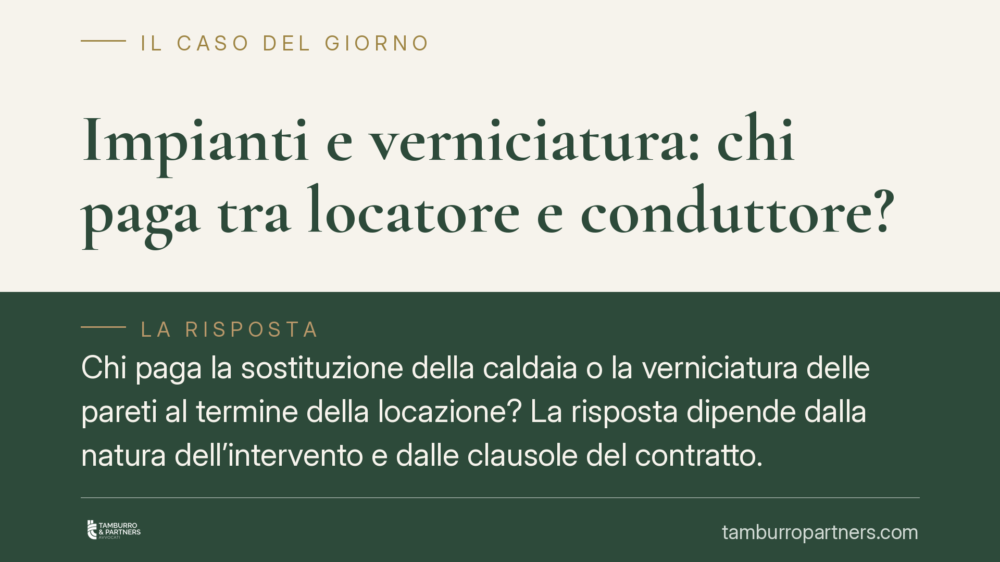

Impianti e verniciatura: chi paga tra locatore e conduttore?
Chi paga la sostituzione della caldaia o la verniciatura delle pareti al termine della locazione? La risposta dipende dalla natura dell'intervento e dalle clausole del contratto. La distinzione tra manutenzione ordinaria e straordinaria, unita alla disciplina speciale delle locazioni, definisce la ripartizione degli oneri tra locatore e conduttore.

Il punto di partenza: ordinaria o straordinaria?
La ripartizione delle spese nella locazione ruota attorno a una distinzione tecnica: manutenzione ordinaria e manutenzione straordinaria.
Le spese ordinarie attengono alla normale gestione e all'uso quotidiano del bene. Restano di regola a carico del conduttore. Rientrano in questa categoria la sostituzione delle guarnizioni, la riparazione di un rubinetto che gocciola, la piccola manutenzione degli impianti dovuta all'usura del loro utilizzo.
Le spese straordinarie riguardano interventi che incidono sulla struttura o sulla funzionalità durevole dell'immobile. Restano di regola a carico del locatore. È il caso della sostituzione integrale della caldaia per vetustà, del rifacimento dell'impianto elettrico non a norma, della riparazione di un guasto strutturale non imputabile al conduttore.
Il criterio guida è la causa dell'intervento: se deriva dall'uso normale del bene, tende a gravare sul conduttore; se dipende da vetustà o da un difetto originario, grava sul locatore.
Il quadro normativo pertinente
Il codice civile detta i principi generali: l'art. 1576 c.c. pone a carico del locatore le riparazioni necessarie, eccettuate quelle di piccola manutenzione a carico del conduttore; l'art. 1609 c.c. definisce le riparazioni di piccola manutenzione connesse all'uso.
Accanto al codice opera però la disciplina speciale delle locazioni, spesso più pertinente. Per gli immobili urbani, l'art. 9 della L. 392/1978 individua gli oneri accessori a carico del conduttore. Per le locazioni abitative si applica la L. 431/1998, che regola forma, durata e derogabilità pattizia dei rapporti. È in questo perimetro che va letta la validità delle clausole che ripartiscono le spese in modo diverso dai criteri legali.
Le clausole di ribaltamento e l'art. 1341 c.c.
Un contratto può prevedere che alcune spese normalmente straordinarie siano poste a carico del conduttore. Entro certi limiti, la ripartizione degli oneri è derogabile per accordo tra le parti.
È diffusa la tesi secondo cui simili clausole sarebbero automaticamente vessatorie ai sensi dell'art. 1341 c.c. La lettura va precisata. L'art. 1341, secondo comma, c.c. si applica alle condizioni generali di contratto predisposte unilateralmente da un contraente tramite moduli o formulari, e in tal caso richiede la specifica approvazione per iscritto (la cosiddetta doppia sottoscrizione). Non è un automatismo che colpisce qualunque contratto di locazione: quando il contratto è frutto di trattativa individuale tra le parti, la disciplina delle condizioni generali non opera senza ulteriori argomentazioni. La vessatorietà, dunque, va valutata caso per caso, in base alle modalità con cui la clausola è stata predisposta e negoziata.
La verniciatura delle pareti
La tinteggiatura è un tema ricorrente alla riconsegna. Il criterio è l'uso.
Se le pareti presentano il normale deterioramento legato al decorso del tempo e all'uso corretto dell'immobile, il ripristino non può essere addebitato al conduttore: rientra nel deperimento fisiologico che il locatore assume.
Se invece il degrado deriva da un uso anomalo o da danni — macchie estese, fori non giustificati, alterazioni cromatiche imputabili a incuria — il costo del ripristino può gravare sul conduttore, in quanto eccede la normale usura.
Il verbale di consegna come prova decisiva
Gran parte dei contenziosi sulla riconsegna si decide sulla prova dello stato iniziale del bene. Il verbale di consegna redatto all'inizio del rapporto è lo strumento più efficace: documenta le condizioni dell'immobile e degli impianti al momento dell'ingresso e consente di distinguere l'usura fisiologica dal danno.
Un verbale dettagliato, corredato da fotografie datate, riduce l'incertezza e limita le contestazioni al momento della restituzione.
Cosa fare in concreto
- Verifica la natura dell'intervento prima di ogni pagamento: distingui se si tratta di manutenzione ordinaria (usura) o straordinaria (vetustà o difetto).
- Redigi e conserva il verbale di consegna all'inizio e alla fine della locazione, con fotografie datate dello stato dei locali e degli impianti.
- Leggi le clausole sulla ripartizione delle spese e verifica le modalità con cui il contratto è stato predisposto e sottoscritto.
- Formalizza per iscritto ogni contestazione sulle spese, indicando i fatti e i motivi, e conservane copia.
- Valuta con un legale la posizione prima di assumere iniziative unilaterali: l'autoriduzione o la sospensione dei pagamenti può esporre a morosità e a risoluzione del contratto.
Contributo informativo a cura di Tamburro & Partners - Avv. Giuseppe Tamburro. Non costituisce parere legale.
Ogni contratto ha il suo equilibrio.
Se vuoi una revisione delle clausole o una redazione su misura, scrivi allo studio. Ti rispondiamo entro un giorno lavorativo.